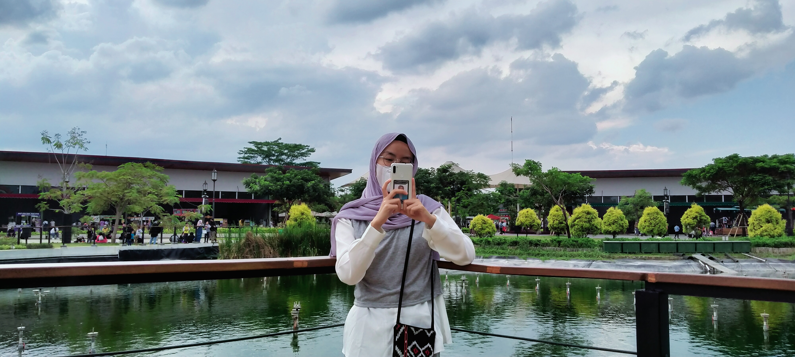

Biodata
Anis Nurjanah
Hi! This is me, Anis. An ordinary girl who love to dreams and make that all come true. I'm a fangirl. I have so many fandom, there is six! Wow, so many, right? So, below is two of my fandom name. Enjoy see it!
just the ordinary girl in this temporary world.
Hi! This is me, Anis. An ordinary girl who love to dreams and make that all come true. I'm a fangirl. I have so many fandom, there is six! Wow, so many, right? So, below is two of my fandom name. Enjoy see it!
since december 2019. a fandom name of NCT.

since july 2022. a fandom name of Seventeen. it's the latest time i become a fangirl.
my email is: anisnurjanah207@gmail.com.